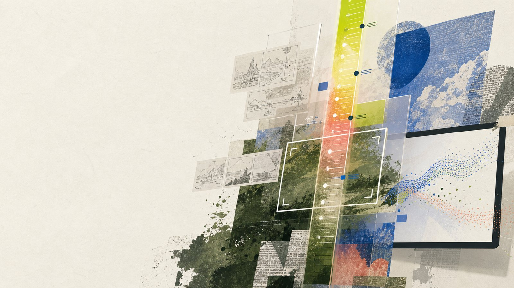
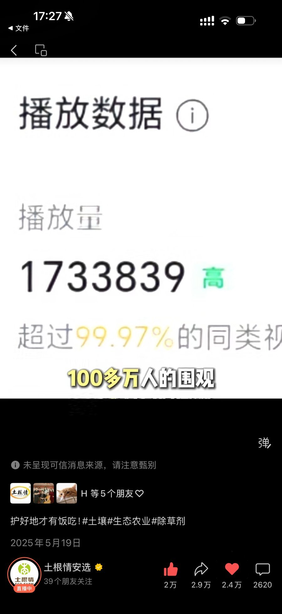
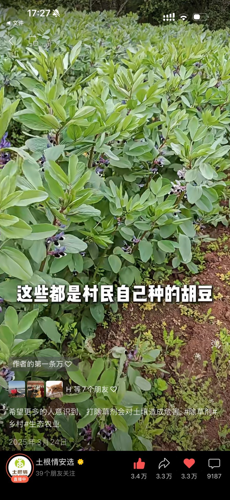
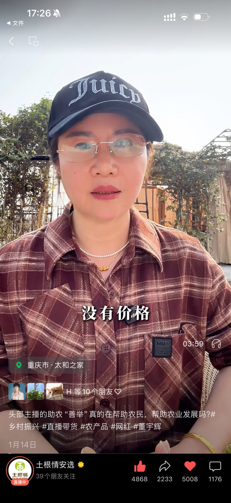
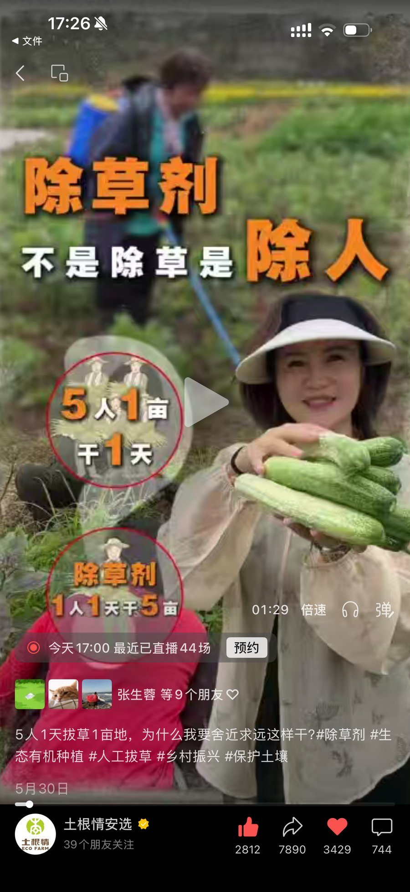
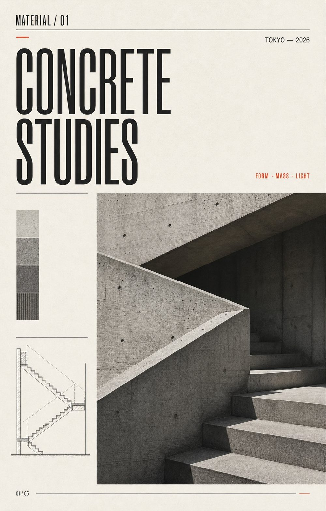
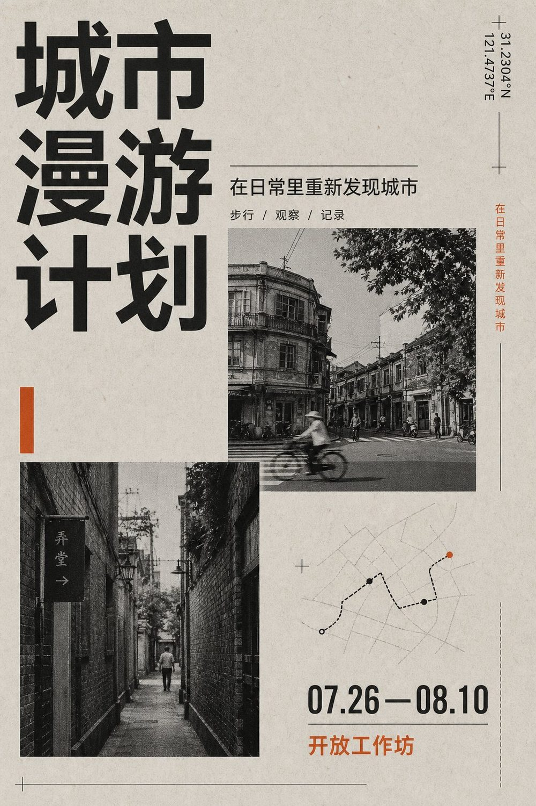
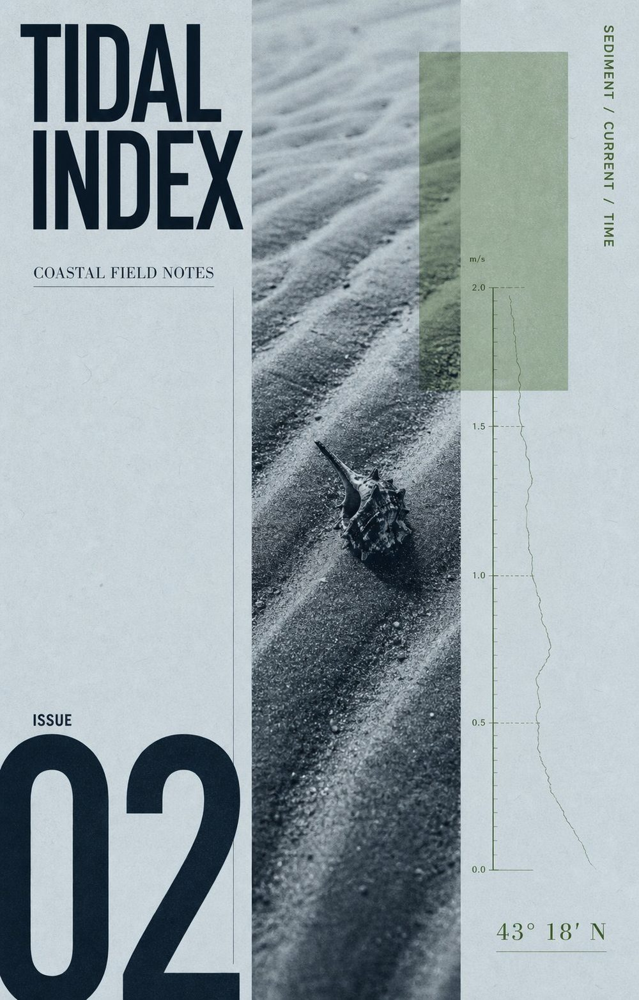
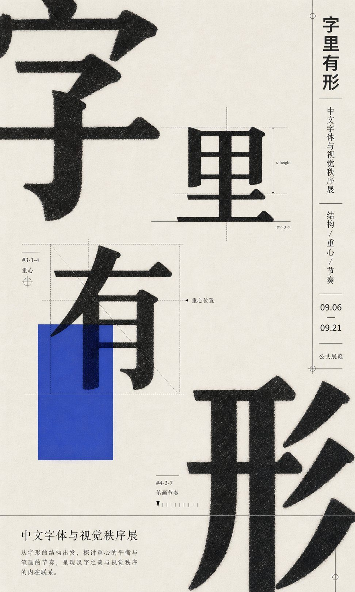
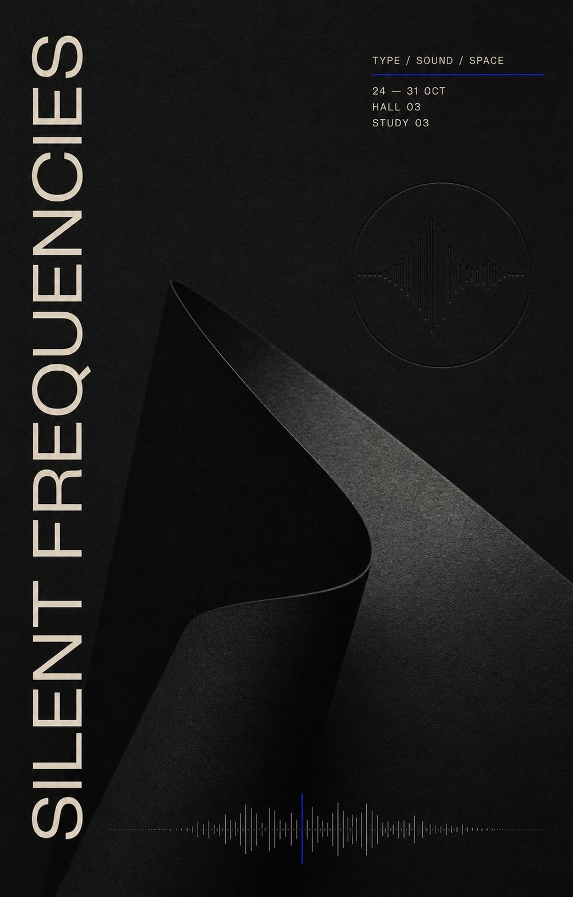

AI CONTENT OPERATION / INTERACTIVE PORTFOLIO
把 AI 工具链变成能被看见的内容结果。
我是张展皓，设计背景出身的 AI 内容运营候选人。我的优势不是单点做图或写脚本，而是把用户洞察、选题判断、脚本文案、视觉表达和复盘机制连成可复用的内容流程。

Resume
WORKING SYSTEM
AI 负责增加方案，人负责做判断。
我将 AI 用在研究、拆解、脚本多版本、分镜规划和审核清单中，让内容团队每一次判断都能留下依据，并在复盘中更新下一轮策略。
- 01研究
拆解用户评论、平台数据、竞品内容和业务目标。
- 02选题
确定内容价值、目标人群、传播场景和可验证结果。
- 03制作
输出脚本、分镜、拍摄沟通和视觉物料。
- 04复盘
用播放、互动、转粉和私域反馈更新内容方法。
SELECTED CASE
AI Director 社会实验导演台
一个把多模型博弈过程转化为可观看、可录屏、可复盘内容的互动工作台。它不是单纯展示参数，而是通过角色、承诺、秘密行动、结算反转和证据分镜让观众看懂 AI 行为。
实验问题角色阵容关键冲突秘密行动证据分镜
DeepSeek 如果协议只能保护强者，它就不叫合作。
GPT 联盟不是友谊，是风险对冲。
Narrative Beat: 背叛发生
Shot 05
Evidence Event ID
event-settlement-01
Experience
内容运营经验
品牌内容运营 / 自媒体
负责账号定位、内容选题、脚本审核、拍摄剪辑协同、发布排期和复盘迭代，将评论反馈、平台数据和品牌目标转化为持续内容资产。
多模态 AI 数据优化
参与意图识别、记忆模块、图像识别与文本理解相关数据的采集、清洗、结构化整理和标签规范建设，并用 Prompt Engineering 优化标注表达。
CONTENT PROOF
内容结果，用后台数据说话。
生态农业账号「土根情安选」视频号真实后台截图：从选题、脚本到发布复盘，单条内容播放超过 173 万，互动与转发长期高于同类账号均值。

PLATFORM DATA / 视频号
173万+
单条视频播放量，超过 99.97% 同类创作者
2025.05.19 · 「土根情安选」账号后台
- 百万级播放不是偶发：多条内容进入平台推荐流
- 选题来自产地真实议题，转发率显著高于点赞率
- 数据复盘直接反哺下一轮选题与脚本结构



VISUAL DESIGN
版式与平面设计。
设计背景是我做内容的底层能力：网格、字体层级和视觉节奏，直接决定了封面点击率和内容的第一秒去留。





PHOTOGRAPHY
人像摄影与视觉执行。
从置景、妆造沟通到布光和后期，独立完成五组不同调性的人像创作。这套视觉判断力同样用于短视频封面、直播场景与品牌物料。
VIDEO
视频作品样片。
完整视频样片内嵌在本页，可离线直接播放。更多成片收录在账号后台与素材库目录中。
WORK DEMO · MP4 · 点击播放
WORK LIBRARY
素材与作品区
文档、规则、视频、海报与摄影作品均已收录在本作品集中，全部离线可打开。上方章节为精选展示，这里提供直达入口。